Остров везения на Байкале есть или Ольхонская эпопея
Июнь 2007
"Привет, ты же уже защитила дипломную работу? А чем собираешься
заниматься завтра днём, послезавтра, после-послезавтра? И вообще ближайшие
пять дней? Поедешь на Ольхон? Отправление завтра утром", - с этих
слов в телефонной трубке началась моя ольхонская эпопея, которая затянулась
на 9 незабываемых дней. Повод для поездки - фотосопровождение.
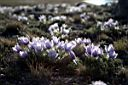 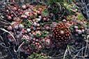 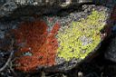 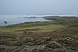
7 утра, остановка у лингвистического университета - это похоже на традицию.
Жду уже прославившийся "шульцепазик". Он опаздывает - это уже
тоже традиция :)
"Пазик" приехал на тракторных колёсах; в салоне - родные колёса,
бочка бензина, велосипед, что-то еще и еще, 4 пассажира и неподражаемая
"шульцесобака" Марта. На Ольхон со скоростью 50 км/ч - мечта!
Успеваешь поговорить с "сопутниками" на всевозможные темы, поспать,
поесть, еще раз поговорить и еще разок поспать. Нас обогнали все автомобили-дома
немцев, которых мы, собственно, и везли на Ольхон. А нам куда спешить?
Всё равно на пароме еще жить полдня. Переправились мы в 10 вечера. Немцы,
не отъезжая от переправы, легли спать (пора по расписанию).
5 дней эпопеи прошли в компании тех самых немцев, которые
совершают полугодовое турне на своих автомобилях - домах: Россия, Китай,
страны СНГ, Турция, Европа… "Мой адрес не дом и не улица…" Отдых
на острове начался у немцев со стирки пожиток и мытья "квартир".
Это был день первый.
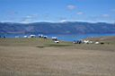 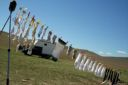 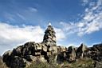 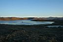
День второй. На второй день был приглашён шаман. Шаманские байки, легенды,
ритуалы, танцы - всё в лучших традициях. Но я этого почти не видела и
не слышала. Я открыла в себе новый талант - мытье "шульцепацика".
Вести по Ольхону немцев в той грязи, которая царила тогда в автобусе,
было просто неприлично. Мне выдали ведёрко, тряпочки, моющие средства…Арбайтен,
нигеры!
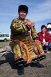 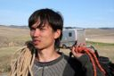 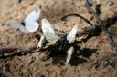 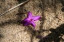 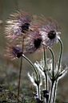
День третий. Загружаем 25 иностранцев в ПАЗик. "Обслуживающий персонал"
- четверо человек (я в их числе), сопровождающие товарища Шульца в этом
рейде и по мере возможности помогающие ему (или мешающие), - ехали в УАЗике
(отлично устроились!).
Начинается тур по Ольхону с посещения бурятской деревни. Национальные
юрта, предметы быта, песни, танцы; неподражаемая бабушка с носками из
овечьей шерсти - это всё именно здесь. А еще - вкуснейший творог, сметана
и чай. И всё можно увидеть, послушать, пощупать, понюхать и попробовать.
Едем дальше - видим …Хужир, мыс Скала-Шаманка, сувенирный магазин и, напоследок,
продуктовый. Затарились на дальнюю дорожку…. Далее - экстрим на "пазике":
с горы на гору, из песков в леса (они там иногда встречаются:). Проезжаем
романтичную заброшенную деревеньку Песчаная. Еще немного экстрима по лесу
и мы на обеденной полянке. Никогда не ела более вкусного омуля горячего
копчения!!! А еще…а еще я никогда не ела омулёвые глаза. Но Шульц - "местный
Маугли" - научил. И ведь мне понравилось! Бедные немцы - им пришлось
отдельно складывать по тарелочкам рыбные косточки и отдельно рыбьи головы
(по нашей, конечно же просьбе)…и наблюдать как двое голодных русских жадно
высасывают рыбьи глазки.
Доехать до северной оконечности Ольхона - мыса Хобой - немцам не хватило
сил - надо было уже скоро принимать таблеточки и на боковую.
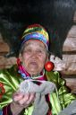 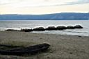 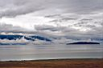 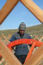
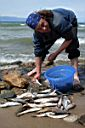 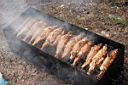 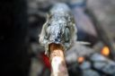 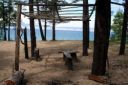 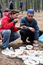
День четвертый - просто день полного разлагательства и полной свобод:
хотите - отдыхайте, купайтесь, загорайте; а хотите - стирайте, мойте,
убирайтесь…
Прощальный - пятый день. На два часа дня был "заказан" баран.
О ужас!!! Барана привезли только в пять!.. Непростительная не пунктуальность...
Конечно, показывать, как умерщвляют барана по национальным бурятским традициям,
не стали. Но готовился он как полагается. Шашлыки из печени, кровяная
колбаса, косички из кишок и всех прочих внутренностей, жирнющий бульон…м-м-м-м…пальчики
оближешь!!! Этим бульоном и мясом мы питались потом еще почти три дня.
А этим вечером все дружно ели, пили, пели русские народные песни. А завораживала
песнями немецкую публику наша Жанна (как оказалось, музыкальный редактор
иркутского городского радио).
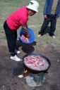 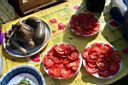 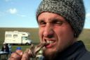 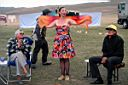 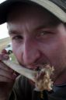
Утро шестого дня встретило нас тёплым дождиком. Низкие красивые облака
над озером, пары от нагретой земли, постепенно разъезжающийся автомобильно-палаточный
лагерь - всё создавало определённое лиричное настроение…
Вот мы и у парома. Сколько ждать? А бог (ой, вернее, капитан) его знает…Пообедали,
погуляли, обменялись телефонами, е-мэйлами, фотографиями…и даже помыли
свои машины… Паром… Ауфвидерзейн, немцы! Приезжайте к нам еще! Правда!
А мы, встретив с парома друзей, дружной русской толпой отправились на
базу "Кобылья голова", где за 2 дня успели попариться в баньке
(естественно, с вбеганием в Байкал), попеть песни, поставить юрту, половить
рыбу, погрести на байдарке и даже покататься на винсерфе (правда, на это
решился только один - Мишка Мецик).
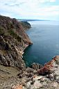 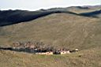 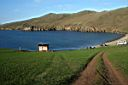 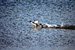 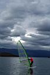
Проводив этих друзей, мы остались на Байкале еще на 2 дня
- должны были показать Ольхон группе московских школьников. В этом туре
мы не только доехали до северной оконечности острова, где открывается
вид на "большое море", но даже успели оценить красоту так называемых
Трёх братьев - трёх стоящих рядом бело-ораньжевых (от мха) скалок. Вместо
копчённой рыбы на этот раз была приготовлена настоящая уха из свежего
омуля. Ваня Шульц - волшебник!
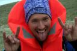 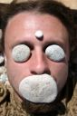
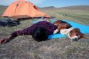 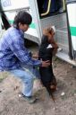 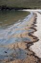 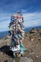
В этой совершенно незапланированной мной поездке на Байкал я не знала,
что ждёт меня в каждом следующем дне и каждый (каждый!) приносил мне что-то
новое, неизведанное ранее. Карта памяти моего фотоаппарата была столь
же полна фотографиями, как была полна моя голова и душа впечатлениями
и эмоциями. Мне оставалось желать только одного - горячего душа или ванны!...
и сразу же возвращаться обратно - в царство совершенной красоты, совершенной
гармонии и непредсказуемости…
ЗЫ. Мне сказали, что за те 9 ольхонских дней я "одичала" и
превратилась в настоящего байкальского Маугли… А я и рада. Что еще для
счастья надо?! Спасибо огромное за всё это Ивану Шульцу. Искреннее душевное
спасибо.
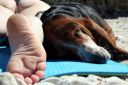
Июнь 2007
Фото и рассказ :
Ксения Шультайс ака poZvonoK
|